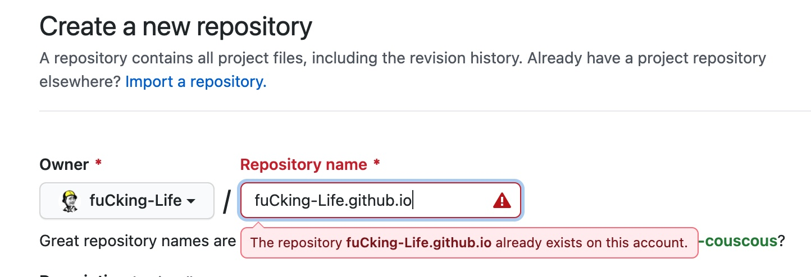

Hugo的使用和主题的修改
Sat, Apr 10, 2021
100 Words|Read in about 1 Min|Total Amount of Reading Times
本人电脑是mac，所以仅仅按照mac的安装步骤阐述。
1. 安装git 和 brew
应该都要的，没有的请自行百度。
2. 安装Hugo
-
- brew install hugo // 下载hugo
-
- hugo new site blog //初始化站点，一般是在Users/目录下
-
- https://themes.gohugo.io/ // 选择一个你中意的主题
-
- cd themes/
-
- git clone 主题地址
-
- cd themes/主题/examplesite
-
- hugo server –themesDir ../.. //可以查看当前的主题 也可以直接使用
3. 生成一个blog
-
- hugo new post/first_blog.md //生成一个blog，在content/post/下
4. 关联远端 github
-
- 去github创建一个仓库，仓库的名字要跟你的github名字一样：如下图所示

-
- hugo –baseUrl=“https://上面的仓库名字” –buildDraf ts //这会生成一个public文件
5. 将文件推送到远端
-
- cd public
-
- git init
-
- git add .
-
- git commit -m “update”
-
- git push origin master
6. 修改theme
-
- 可以直接把examplesite里面的config复制到根目录，覆盖即可。然后根据里面的内容进行修改。
-
- 图片需要在根目录放置一个static/，这个也可以参考examplesite，看看他是怎么放的。